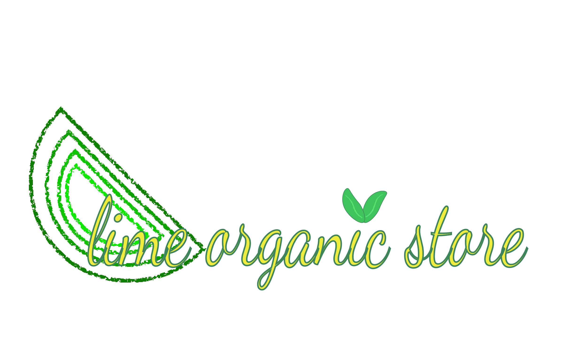
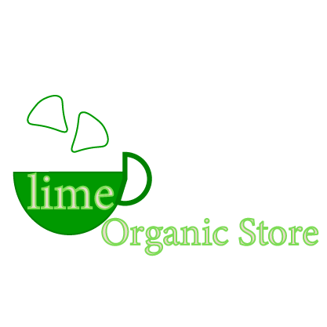
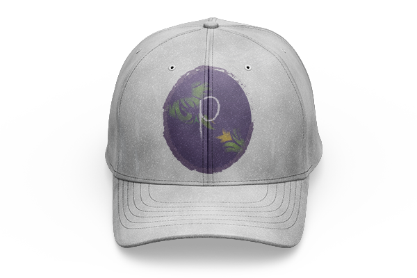
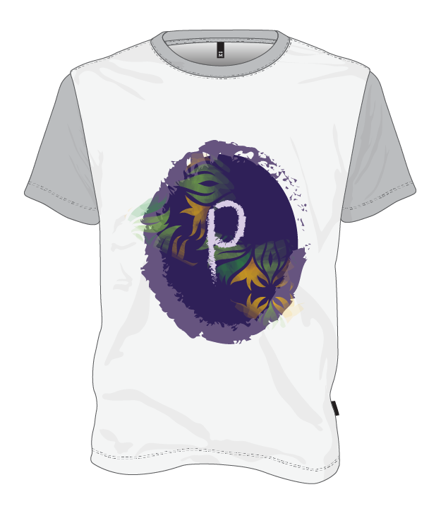
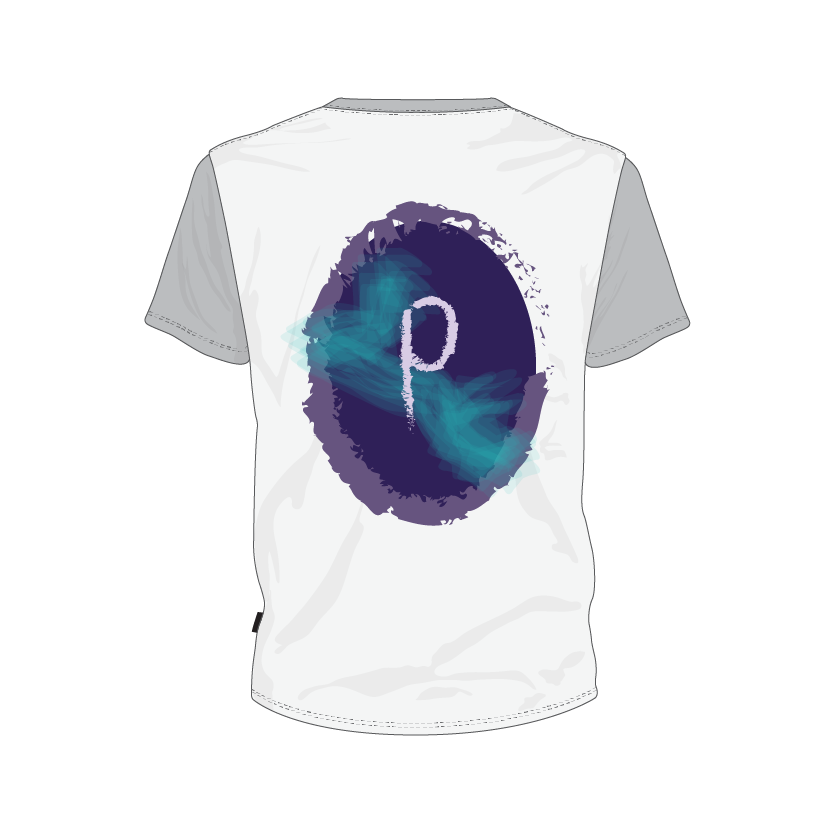
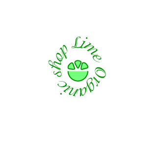
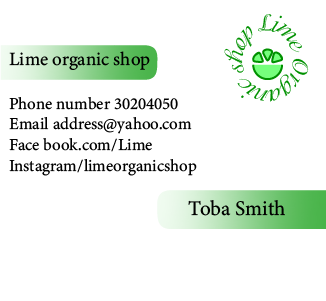

Logo PresentationMockup

This logo is designed for a front page on facebook. I have used green and yellow colors to emphasize more on freshness and organic products. By studying the organic stores around us I discovered the combination of these colors is going to grab more customer’s attention for my client. I have avoided using fonts with serif to give an assuring feeling to those who visit my client's facebook.

This logo has the elements that I discovered are interesting for people that prefer to use organic products. It represents a cup of lime tea which is healthy and organic. The color gives the fresh feeling as a lime itself. I have used rounded shapes to communicate with customers that care about cruelty free products.

In this cap prototype i used my client's zodiac sign and the first alphabet of his name. The colours are used by his own choice.

In these following prototypes i used the same logo but i wanted my client to have a picture of his T.shirts with the logos i have designed for him.

The zodiac sign was an idea which came to my mind by searching about the most sold items on the internet with the patern of zodiac sign.

